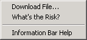

To help protect your security, Internet Explorer blocked this site from downloading files to your computer. Click here for options…
不知道為什麼用 Selenium 去點檔案下載的連結時，畫面上方會出現一條黃色的 information bar：

而且只要去點過這個 bar 叫出選單之後（即便沒有按下任何選項），Selenum 就再也控制不到該視窗了，繼續操作的話會丟出下面的錯誤：
Exception: ERROR: Current window or frame is closed!比較不能理解的是為什麼下載 PDF 也會跳出 information bar 阻擋？
透過 security 設定的調整，當然可以讓 information bar 不要再跳出來：
-
Tools > Internet Options… > Security > Custom level…
-
把 Downloads > Automatic prompting for file downloads 調整成 Enable （跑過 information bar，直接提問檔案要存到哪裡）
不過最理想的方式應該是不用去調 security 的設定，因為 information bar 在手動測試時並不會出現。
實驗發現，利用其他工具發出 native mouse click 時（例如 AutoIt 的 MouseClick('left', x, y)），並不會跳出 information bar。
雖然 Selenium.getElementPositionLeft() 與 Selenium.getElementPositionTop() 可以用來取得某個 element 相對於內容左上角的坐標值（而非瀏覽器 viewport 的左上角，因此還要扣除 window.pageXOffset 與 window.pageYOffset）。
|
|
如何取得某個 element 在整個 screen 的坐標位置？
很多人都有類似的問題…
|
這樣的行為在人為去點的時候是沒有的。
IE7 之後才有。可以發展一個 Download Click 判斷到 IE7 以上時就改用 AutoIt 去點。